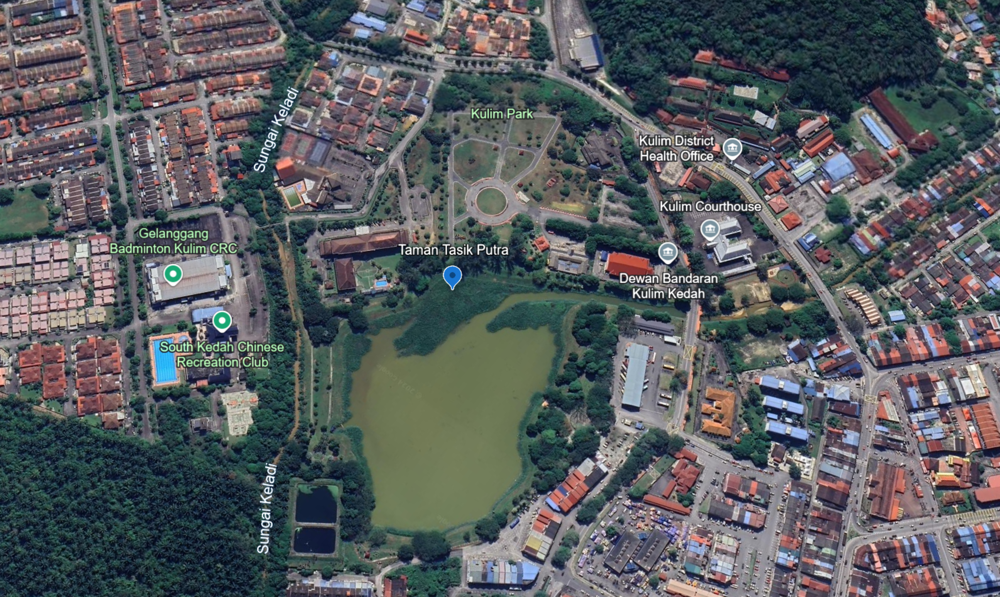
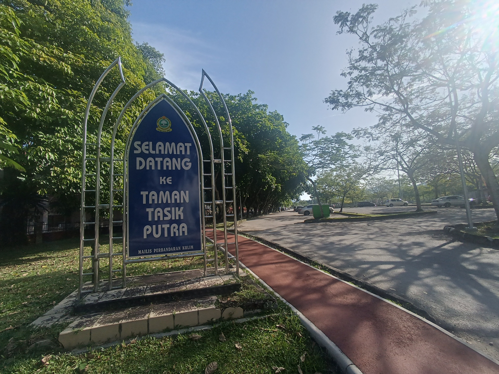
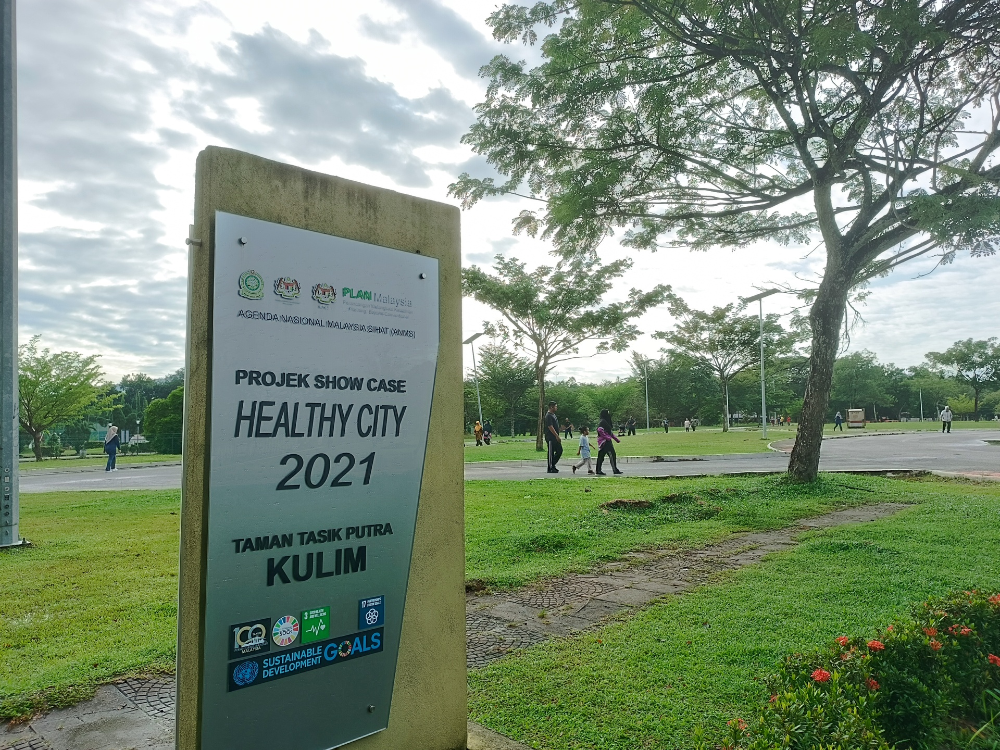

About
Formerly a tin mining site, Taman Tasik Putra was established in the 1880s. Being located between the bus terminal and Seri Malaysia Hotel, Taman Tasik Putra's central location is one reason for its popularity.
The size of this park is around 91.6 hectares, giving visitors a large place to carry out recreational activites. One of its key features is the lake area, where people can enjoy the view while talking a walk, have a picnic or even go fishing.
The 2021 ANMS (Agenda Nasional Malaysia Sihat) has recognised Taman Tasik Putra as an important place to engage a healthy lifestyle within the community.

Location
Jalan Belibis,
Taman Tunku Putra,
09000 Kulim, Kedah.

